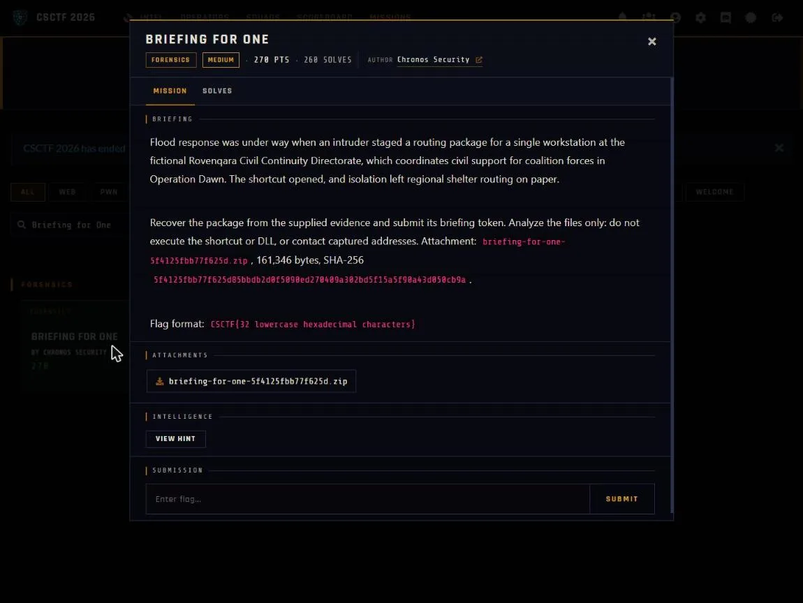

01Start point: the handout zip and its field guide
- What I did: checked the outer zip's SHA-256 against the challenge text, then verified the five members (briefing.lnk, machine-cryptography.hiv, egress.pcapng, field-guide.md, provenance.json) against SHA256SUMS.
- What I found: field-guide.md says to work on copies and never open the shortcut, load the DLL or contact a recorded address. It says the hive is a saved Cryptography subkey that a reader presents as its root, and it gives a worked HMAC example vector for checking byte handling.
- Thinking: the guide spells out what a safe, static reconstruction has to reproduce, so once the hashes matched I treated every later step as data handling only.

02Pivot: the shortcut's command line is the recipe
- What I did: pulled the UTF-16 command string out of briefing.lnk as data, without opening the shortcut.
- What I found: a hidden powershell.exe -Command that reads MachineGuid from HKLM\SOFTWARE\Microsoft\Cryptography and derives a password as hex HMAC-SHA256, with key = base64 of eyy//ntonkO5y+zE61CW4ddRSUWiWBgzwe3ra1tENd8= and message = "csctf26/briefing-for-one/v1" || 0x00 || the lower-case GUID.
- What I found: it then copies \\briefing.rovenqara.test@80\DavWWWRoot\ops\route-update.7z over WebDAV (expected SHA-256 d29a0679...), 7z-extracts it with that password, checks the route-update.dll and route-table.json hashes, and runs rundll32 ApplyRouteTable. The token lives in route-table.json.
- Thinking: the command line names every input I need (MachineGuid, the HMAC recipe, the archive and its expected hash), so I could rebuild the whole chain offline.
- Result: three inputs to recover: MachineGuid, the password and the 7z.
03Exploit: MachineGuid from the hive, then the password
- What I did: wrote a small regf parser that walks the nk and vk cells from the saved root of machine-cryptography.hiv.
- What I found: MachineGuid is 080c7be1-f41c-446c-b961-93bd7bc4ea31.
- What I did: checked my HMAC code against the field guide's example vector (7dad6991...), then ran it on the real GUID to get the password ee731407a271c8aa4b92f93d362591626421d32465aeba3f912ac09c576dc6c0.
- Thinking: the password is keyed to this workstation's MachineGuid, so the hive came first, and matching the guide's vector proved the byte layout (one 0x00 separator, lower-case GUID, hex output) before I used real inputs.
04Pivot: carve the 7z out of the WebDAV capture
- What I did: reassembled the server-to-client TCP streams in egress.pcapng and split them into HTTP responses.
- What I found: the host-only WebDAV exchange is 1 OPTIONS, 6 PROPFIND (their 207 XML bodies are decoys) and 1 GET for /ops/route-update.7z, whose 5,359-byte body hashes to d29a0679..., the same value the shortcut checks.
- Thinking: the field guide warns that a DAV XML body, a raw TCP stream and the binary object are different bytes, so the shortcut's own hash was the test: a match means the carved body is byte-exact.
05Flag: open the archive and read the token
- What I did: opened the 7z with py7zr and the derived password, giving route-update.dll (230b2e64..., never run) and route-table.json (cc106579...).
- What I found: route-table.json holds "briefing_token":"CSCTF{eab85b3bb8d309ec8f52a3f6271c55ff}" plus two routes (North Depot to School 4 open, West Depot to Hall 2 divert). The DLL's strings carry the same JSON split around the token value.
- Thinking: the JSON and the DLL strings are two independent sources agreeing on the token, which is enough to trust it.
- Result: CSCTF{eab85b3bb8d309ec8f52a3f6271c55ff}